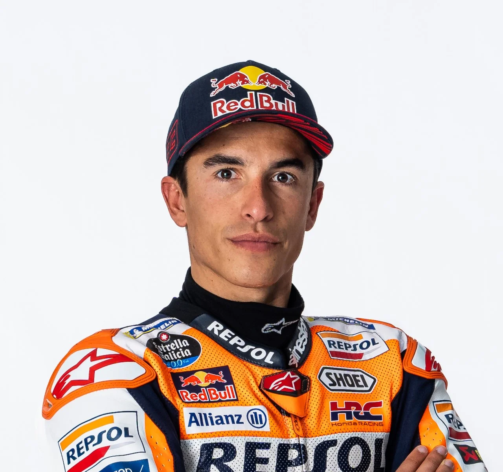
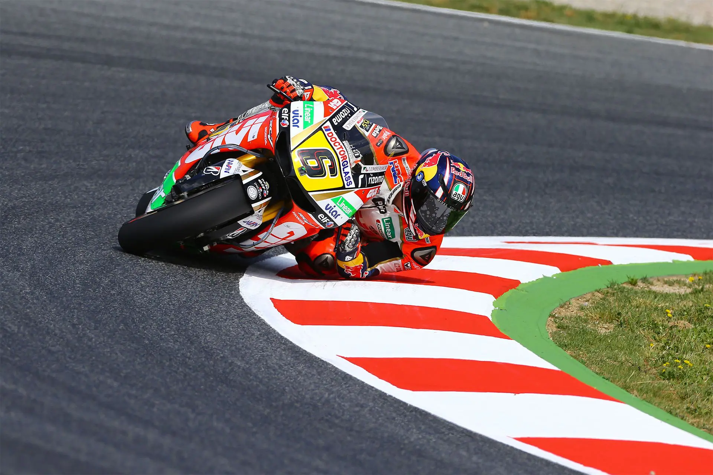
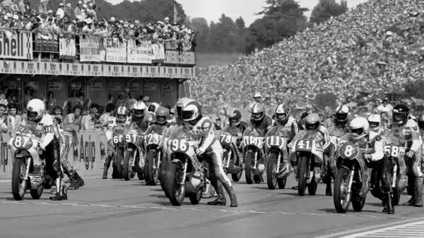
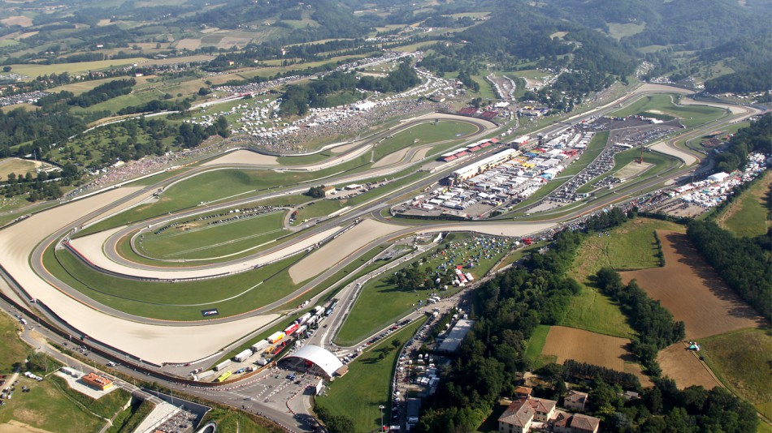
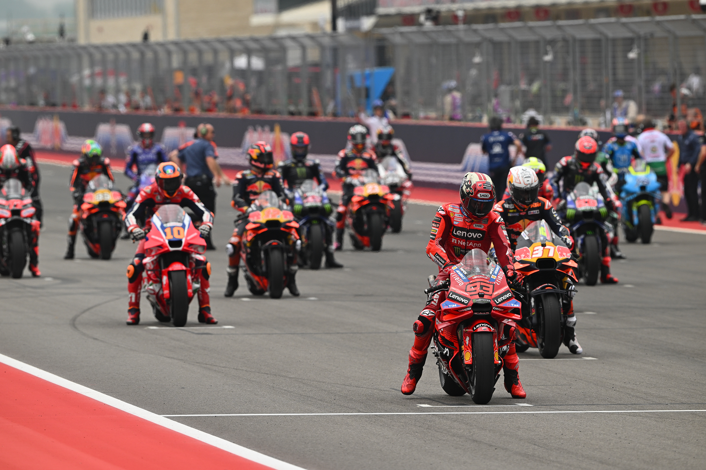
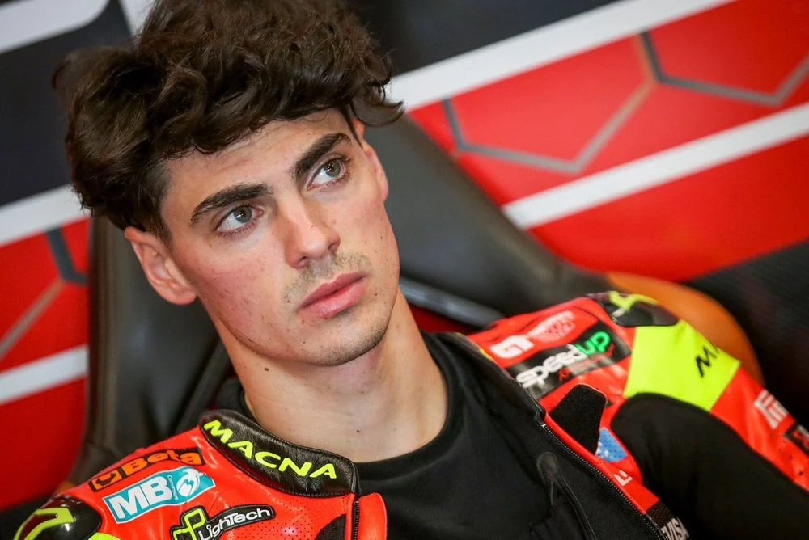
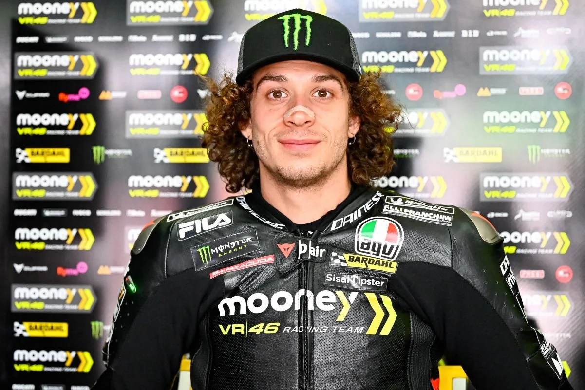
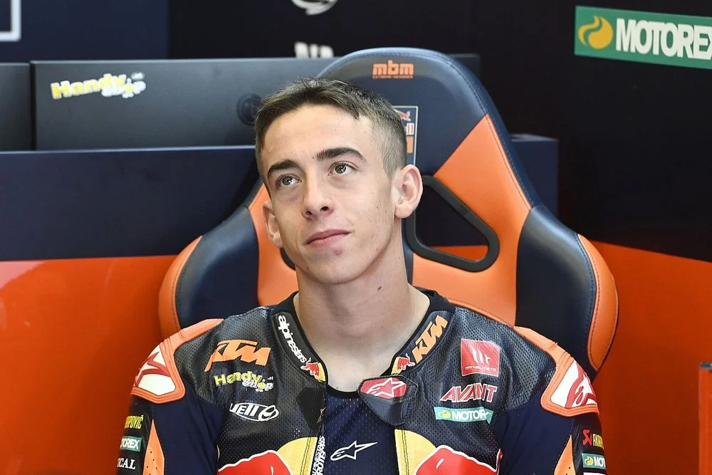
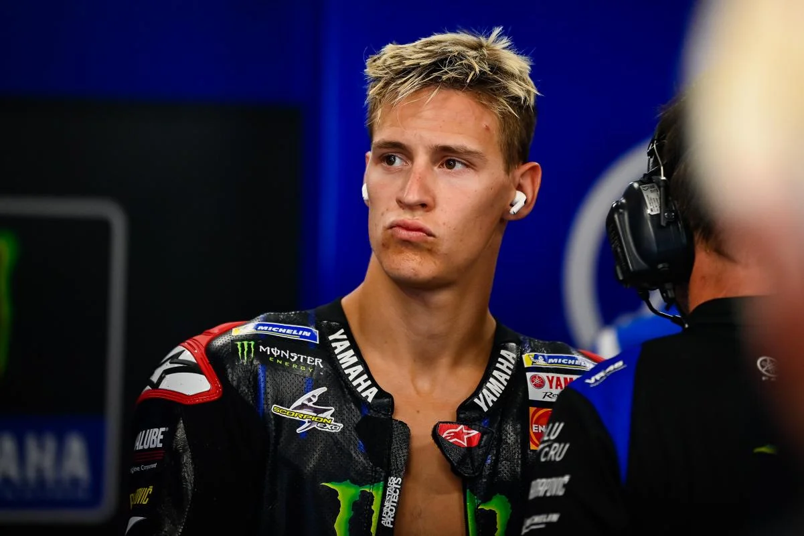
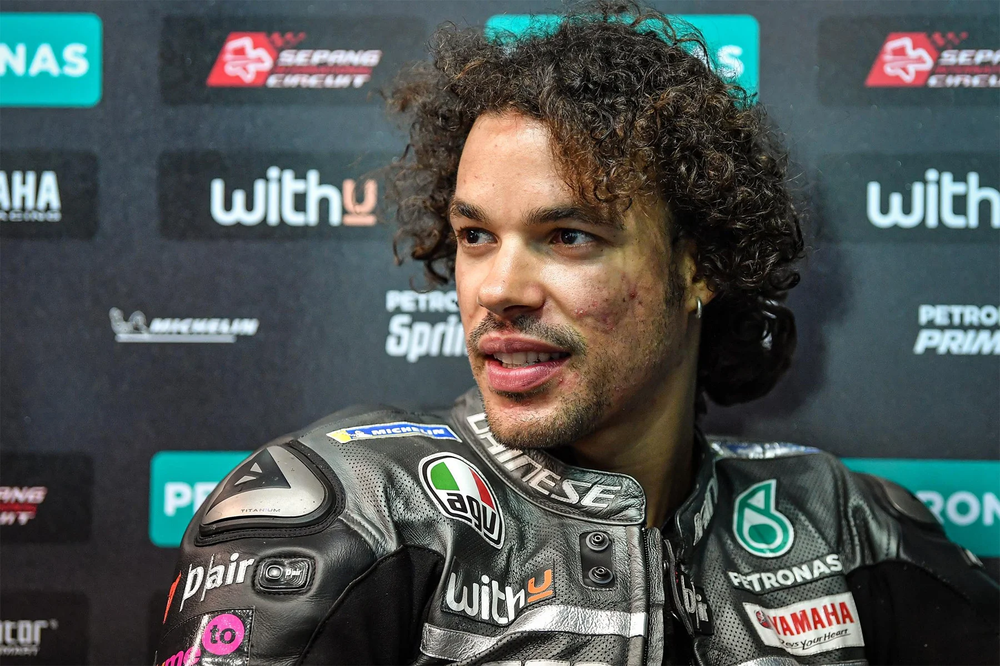

Marc Márquez
Ducati
Deze Spanjaard is één van de meest succesvolle MotoGP-coureurs ooit met zeven wereldkampioenschappen. Hij maakte een comeback in 2025 na jaren van blessureleed.

Dé plek voor MotoGP liefhebbers
Tot 350 km/u
Beste coureurs
Races op 5 continenten
Geavanceerde innovatie
Miljoenen fans
Grand Prix motorraces worden gereguleerd door de FIM, de internationale motorfederatie. Deze organisatie heeft diverse herstarts doorgemaakt sinds de eerste oprichting in 1904 aangezien deelnemende landen in het begin meer bezig waren met winnen dan een eerlijke race. Sinds eind jaren 40 is er een hoop veranderd. De FIM kreeg gaandeweg meer zeggenschap over de regels en de veiligheid van de races en was ook de organisator van de Grands Prix. In 1992 werd Dorna Sports de promotor en organisator van de races en werd de naam van het kampioenschap veranderd in MotoGP.
Meer geschiedenis

Van het iconische Mugello in Italié tot het indrukwekkende Circuit of the Americas in de Verenigde Staten, de MotoGP racet over de hele wereld op legendarische circuits die bol staan van geschiedenis, snelheid en emotie. Elk circuit heeft zijn eigen karakter en uitdagingen.
Kalender
MotoGP motoren vertegenwoordigen het toppunt van motorsporttechnologie, met geavanceerde aerodynamica, elektronica en materialen die de grenzen van snelheid en prestaties verleggen.
MotoGP Nieuws
Van legendarische kampioenen zoals Valentino Rossi en Marc Marquez tot opkomende sterren, de coureurs van MotoGP zijn de helden van de sport en inspireren miljoenen fans over de hele wereld.
CoureursWij hebben contacten bij diverse test teams en ook bij de organisatie zelf waardoor wij altijd het laatste nieuws en vaak exclusieve inzichten kunnen delen. Als lid ontvang je onze nieuwsbrief elke maand.
Wij hebben exclusieve arrangementen met de TT van Assen en de Sachsenring in Duitsland en kunnen 20% korting bieden op de volgende tickets:

Deze Spanjaard is één van de meest succesvolle MotoGP-coureurs ooit met zeven wereldkampioenschappen. Hij maakte een comeback in 2025 na jaren van blessureleed.

Een opkomend Spaans talent in de MotoGP, in 2025 maakte hij zijn debuut in de koningsklasse en wist gelijk een race te winnen. Bekend om zijn onverschrokken rijstijl, vooral in de bochten.

Deze Italiaan lijkt in veel opzichten op de legende Valentino Rossi en is een vaste naam bovenin de klassering sinds zijn debuut in 2022. Hij maakte indruk met zijn vooruitgang afgelopen jaar.

Een jonge Spaanse coureur die kampioen in Moto3 en Moto2 werd voordat hij in 2024 de overstap maakte naar MotoGP. Bekend om zijn aggressieve rijstijl. Had afgelopen jaar al een paar podiumplaatsen.

Ondanks dat Yamaha moeite heeft een competitieve motor te leveren weet deze Franse coureur zich toch voorin iedere wedstrijd te handhaven dankzij zijn uitzonderlijke natuurlijke talent en snelheid.

Een Italiaanse wildebras die zijn ellebogen gebruikt zowel in de bochten als in zijn duels met andere coureurs. Na een aantal moeilijke jaren behaalde hij afgelopen jaar de 7e plaats in het kampioenschap.